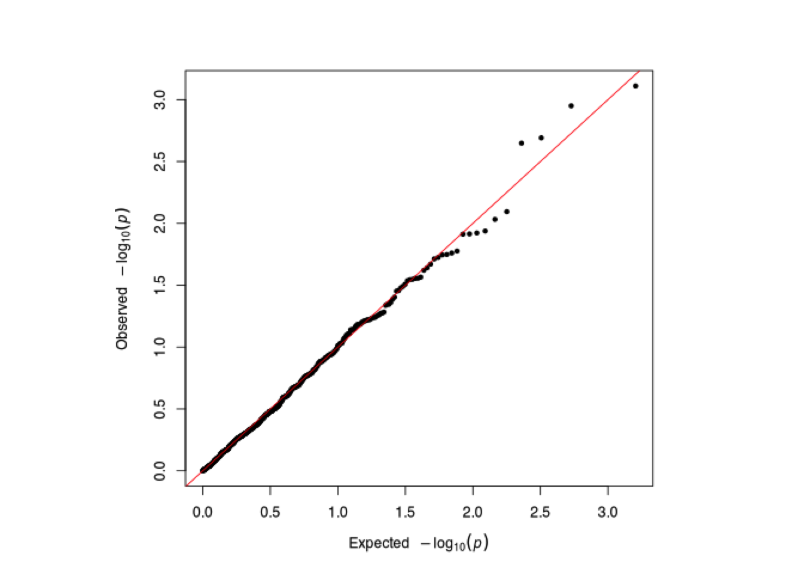

Chapter 5 GWAS with Continuous Trait
After all files are prepared in the PLINK format, we are ready to perform association test. The following code conducts the Genome-Wide Association Test by PLINK. This code will take 1 minute to finish.
# both Mac and Windows can run in Terminal
# windows users
../../Tools/PLINK/plink_win64_20231211/plink.exe \
--noweb --file genotype_1k --assoc --adjust --pheno phenotype_plink.txt \
--all-pheno --out younameit# macOS users
../../Tools/PLINK/plink_mac_20231211/plink \
--noweb --file genotype_1k --assoc --adjust --pheno phenotype_plink.txt \
--all-pheno --out younameit## PLINK v1.90b7.2 64-bit (11 Dec 2023) www.cog-genomics.org/plink/1.9/
## (C) 2005-2023 Shaun Purcell, Christopher Chang GNU General Public License v3
## Logging to younameit.log.
## Options in effect:
## --adjust
## --all-pheno
## --assoc
## --file genotype_1k
## --noweb
## --out younameit
## --pheno phenotype_plink.txt
##
## Note: --noweb has no effect since no web check is implemented yet.
## 16384 MB RAM detected; reserving 8192 MB for main workspace.
## Scanning .ped file... 0%1%1%2%2%3%3%4%4%5%5%6%6%7%7%8%8%9%9%10%10%11%11%12%13%13%14%14%15%15%16%16%17%17%18%18%19%19%20%20%21%21%22%22%23%23%24%24%25%26%26%27%27%28%28%29%29%30%30%31%31%32%32%33%33%34%34%35%35%36%36%37%38%38%39%39%40%40%41%41%42%42%43%43%44%44%45%45%46%46%47%47%48%48%49%49%50%51%51%52%52%53%53%54%54%55%55%56%56%57%57%58%58%59%59%60%60%61%61%62%63%63%64%64%65%65%66%66%67%67%68%68%69%69%70%70%71%71%72%72%73%73%74%74%75%76%76%77%77%78%78%79%79%80%80%81%81%82%82%83%83%84%84%85%85%86%86%87%88%88%89%89%90%90%91%91%92%92%93%93%94%94%95%95%96%96%97%97%98%98%99%100%.ped scan complete (for binary autoconversion).
## Performing single-pass .bed write (1000 variants, 192 people).
## 0%1%2%3%4%5%6%7%8%9%10%11%12%13%14%15%16%17%18%19%20%21%22%23%24%25%26%27%28%29%30%31%32%33%34%35%36%37%38%39%40%41%42%43%44%45%46%47%48%49%50%51%52%53%54%55%56%57%58%59%60%61%62%63%64%65%66%67%68%69%70%71%72%73%74%75%76%77%78%79%80%81%82%83%84%85%86%87%88%89%90%91%92%93%94%--file: younameit-temporary.bed + younameit-temporary.bim +
## younameit-temporary.fam written.
## 1000 variants loaded from .bim file.
## 192 people (0 males, 192 females) loaded from .fam.
## 192 phenotype values present after --pheno.
## Using 1 thread (no multithreaded calculations invoked).
## Before main variant filters, 192 founders and 0 nonfounders present.
## Calculating allele frequencies... 0%1%2%3%4%5%6%7%8%9%10%11%12%13%14%15%16%17%18%19%20%21%22%23%24%25%26%27%28%29%30%31%32%33%34%35%36%37%38%39%40%41%42%43%44%45%46%47%48%49%50%51%52%53%54%55%56%57%58%59%60%61%62%63%64%65%66%67%68%69%70%71%72%73%74%75%76%77%78%79%80%81%82%83%84%85%86%87%88%89%90%91%92%93%94%95%96%97%98%99% done.
## Warning: Nonmissing nonmale Y chromosome genotype(s) present; many commands
## treat these as missing.
## Total genotyping rate is 0.995331.
## 1000 variants and 192 people pass filters and QC.
## Phenotype data is quantitative.
## 192 phenotype values present after --pheno.
## Warning: QT --assoc doesn't handle X/Y/MT/haploid variants normally (try
## --linear).
## Writing QT --assoc report to younameit.P1.qassoc ... 0%11%16%20%24%27%43%50%53%56%61%64%68%70%72%73%76%78%79%82%84%85%94%96%99%done.
## --adjust: Genomic inflation est. lambda (based on median chisq) = 1.34576.
## 0%1%2%3%4%5%6%7%8%9%10%11%12%13%14%15%16%17%18%19%20%21%22%23%24%25%26%27%28%29%30%31%32%33%34%35%36%37%38%39%40%41%42%43%44%45%46%47%48%49%50%51%52%53%54%55%56%57%58%59%60%61%62%63%64%65%66%67%68%69%70%71%72%73%74%75%76%77%78%79%80%81%82%83%84%85%86%87%88%89%90%91%92%93%94%95%96%97%98%99%--adjust values (805 variants) written to younameit.P1.qassoc.adjusted .
## 192 phenotype values present after --pheno.
## Warning: QT --assoc doesn't handle X/Y/MT/haploid variants normally (try
## --linear).
## Writing QT --assoc report to younameit.P2.qassoc ... 0%11%16%20%24%27%43%50%53%56%61%64%68%70%72%73%76%78%79%82%84%85%94%96%99%done.
## --adjust: Genomic inflation est. lambda (based on median chisq) = 1.
## 0%1%2%3%4%5%6%7%8%9%10%11%12%13%14%15%16%17%18%19%20%21%22%23%24%25%26%27%28%29%30%31%32%33%34%35%36%37%38%39%40%41%42%43%44%45%46%47%48%49%50%51%52%53%54%55%56%57%58%59%60%61%62%63%64%65%66%67%68%69%70%71%72%73%74%75%76%77%78%79%80%81%82%83%84%85%86%87%88%89%90%91%92%93%94%95%96%97%98%99%--adjust values (805 variants) written to younameit.P2.qassoc.adjusted .
## 192 phenotype values present after --pheno.
## Warning: QT --assoc doesn't handle X/Y/MT/haploid variants normally (try
## --linear).
## Writing QT --assoc report to younameit.P3.qassoc ... 0%11%16%20%24%27%43%50%53%56%61%64%68%70%72%73%76%78%79%82%84%85%94%96%99%done.
## --adjust: Genomic inflation est. lambda (based on median chisq) = 1.37367.
## 0%1%2%3%4%5%6%7%8%9%10%11%12%13%14%15%16%17%18%19%20%21%22%23%24%25%26%27%28%29%30%31%32%33%34%35%36%37%38%39%40%41%42%43%44%45%46%47%48%49%50%51%52%53%54%55%56%57%58%59%60%61%62%63%64%65%66%67%68%69%70%71%72%73%74%75%76%77%78%79%80%81%82%83%84%85%86%87%88%89%90%91%92%93%94%95%96%97%98%99%--adjust values (805 variants) written to younameit.P3.qassoc.adjusted .- –file specifies .ped and .map files,
- –assoc performs case/control or QTL association,
- –adjust generates a file of adjusted significance values that correct for all tests performed and other metrics,
- –pheno specifies alternate phenotype,
- –all-pheno performs association for all phenotypes in file,
- –out specifies output filename.
This will generate the files younameit.P1.qassoc, younameit.P2.qassoc, younameit.P3.qassoc for each of the phenotype with fields as follows:
CHR Chromosome number
SNP SNP identifier
BP Physical position (base-pair)
NMISS Number of non-missing genotypes
BETA Regression coefficient
SE Standard error
R2 Regression r-squared
T Wald test (based on t-distribtion)
P Wald test asymptotic p-value
5.1 Manhattan Plot and Q-Q Plot
The Manhattan plot is a good way to visualize the resuls of GWAS test. For more details, please refer: https://en.wikipedia.org/wiki/Manhattan_plot
The Q-Q plot for GWAS is another way to visualize the signals. For more details, please refer:https://genome.sph.umich.edu/wiki/Code_Sample:_Generating_QQ_Plots_in_R
qqman is an R package for creating Q-Q and manhattan plots from GWAS results. See the reference page http://www.gettinggeneticsdone.com/2014/05/qqman-r-package-for-qq-and-manhattan-plots-for-gwas-results.html.
The qqman R package assumes you have columns named SNP, CHR, BP, and P, corresponding to the SNP name (rs number), chromosome number, base-pair position, and p-value.
Here is what the data looks like:
SNP CHR BP P
rs10495434 1 235800006 0.62220
rs6689417 1 46100028 0.06195
rs3897197 1 143700035 0.10700
rs2282450 1 202300047 0.47280
rs11208515 1 64900051 0.53430
So we need to extract these columns from our results files so they can be used with qqman. The resulted files are P1.qassoc, P2.qassoc and P3.qassoc for each of the 3 traits.
# bash codes- run in terminal
### Prepare qqman R input files (CHR, SNP, BP, P) (in Linux)
awk '{print $1,$2,$3,$9}' younameit.P1.qassoc > P1.qassoc
awk '{print $1,$2,$3,$9}' younameit.P2.qassoc > P2.qassoc
awk '{print $1,$2,$3,$9}' younameit.P3.qassoc > P3.qassocThe codes below read in the association results as qassoc1, qassoc2, qassoc3. Here we only read in one of the trait as an example, as reading in all three will take a long time.
# R codes- run in R Console
traits=c("z-4-oh-Tam","tamoxifen","z-endoxifen_ratio") #name of four traits
traits=as.matrix(traits) #create a matrix from traits
#Load association results
i=1 #first trait: Z-4-OH-TAM
qassoc1=read.table(paste0("P", i, ".qassoc"), header=T)
qassoc1=qassoc1[(qassoc1$CHR!=0) & (!is.na(qassoc1$P)),]
head(qassoc1)## CHR SNP BP P
## 10 1 rs307354 1264539 0.36230
## 13 1 rs12121577 11794553 0.92960
## 14 1 rs4845898 12339619 0.03024
## 16 1 rs665691 22960354 0.70330
## 18 1 rs7537875 24695151 0.45760
## 19 1 rs8876 25687308 0.88700i=2 #second trait: tamoxifen
qassoc2=read.table(paste0("P", i, ".qassoc"), header=T)
qassoc2=qassoc2[(qassoc2$CHR!=0) & (!is.na(qassoc2$P)),]
head(qassoc2)## CHR SNP BP P
## 10 1 rs307354 1264539 0.1601
## 13 1 rs12121577 11794553 0.4010
## 14 1 rs4845898 12339619 0.7168
## 16 1 rs665691 22960354 0.8944
## 18 1 rs7537875 24695151 0.2571
## 19 1 rs8876 25687308 0.3090i=3 #third trait: MR
qassoc3=read.table(paste0("P", i, ".qassoc"), header=T)
qassoc3=qassoc3[(qassoc3$CHR!=0) & (!is.na(qassoc3$P)),]
head(qassoc3)## CHR SNP BP P
## 10 1 rs307354 1264539 0.8006
## 13 1 rs12121577 11794553 0.6506
## 14 1 rs4845898 12339619 0.1082
## 16 1 rs665691 22960354 0.8454
## 18 1 rs7537875 24695151 0.8902
## 19 1 rs8876 25687308 0.91035.1.1 Generate manhattan plot
We are ready to generate the Manhattan plots. Manhattan plots are generated using manhattan function, and are saved as png files.
## null device
## 1traits=c("z-4-oh-Tam","tamoxifen","z-endoxifen_ratio") #name of four traits
# trait 1: Z-4-OH-TAM
i=1
png(filename=paste0("Manhattan_Plot_for_", traits[i], ".png"), type="cairo")## Warning in grSoftVersion(): unable to load shared object '/Library/Frameworks/R.framework/Resources/modules//R_X11.so':
## dlopen(/Library/Frameworks/R.framework/Resources/modules//R_X11.so, 0x0006): Library not loaded: /opt/X11/lib/libSM.6.dylib
## Referenced from: <31EADEB5-0A17-3546-9944-9B3747071FE8> /Library/Frameworks/R.framework/Versions/4.4-arm64/Resources/modules/R_X11.so
## Reason: tried: '/opt/X11/lib/libSM.6.dylib' (no such file), '/System/Volumes/Preboot/Cryptexes/OS/opt/X11/lib/libSM.6.dylib' (no such file), '/opt/X11/lib/libSM.6.dylib' (no such file), '/Library/Frameworks/R.framework/Resources/lib/libSM.6.dylib' (no such file), '/Library/Java/JavaVirtualMachines/jdk-11.0.18+10/Contents/Home/lib/server/libSM.6.dylib' (no such file)## Warning in cairoVersion(): unable to load shared object '/Library/Frameworks/R.framework/Resources/library/grDevices/libs//cairo.so':
## dlopen(/Library/Frameworks/R.framework/Resources/library/grDevices/libs//cairo.so, 0x0006): Library not loaded: /opt/X11/lib/libXrender.1.dylib
## Referenced from: <63619C6D-FE72-3544-BCEF-9C834A5E39D8> /Library/Frameworks/R.framework/Versions/4.4-arm64/Resources/library/grDevices/libs/cairo.so
## Reason: tried: '/opt/X11/lib/libXrender.1.dylib' (no such file), '/System/Volumes/Preboot/Cryptexes/OS/opt/X11/lib/libXrender.1.dylib' (no such file), '/opt/X11/lib/libXrender.1.dylib' (no such file), '/Library/Frameworks/R.framework/Resources/lib/libXrender.1.dylib' (no such file), '/Library/Java/JavaVirtualMachines/jdk-11.0.18+10/Contents/Home/lib/server/libXrender.1.dylib' (no such file)## Warning in png(filename = paste0("Manhattan_Plot_for_", traits[i], ".png"), :
## failed to load cairo DLLmanhattan(qassoc1, col=c("dimgray", "darkgoldenrod1"), suggestiveline=F, genomewideline=F)
dev.off()## null device
## 1# trait 2: tamoxifen
i=2
png(filename=paste0("Manhattan_Plot_for_", traits[i], ".png"), type="cairo")## Warning in png(filename = paste0("Manhattan_Plot_for_", traits[i], ".png"), :
## failed to load cairo DLL## null device
## 1# trait 3: z-endoxifen ratio
i=3
png(filename=paste0("Manhattan_Plot_for_", traits[i], ".png"), type="cairo")## Warning in png(filename = paste0("Manhattan_Plot_for_", traits[i], ".png"), :
## failed to load cairo DLL## null device
## 1We will directly read the Manhattan plots from saved files. From these manhattan plots, we can observe several significant SNPs or peaks that stand out over others. Specifically, there is one extremely significant SNP for z-endoxifen ratio in chromosome 22. (chr26 here means mitochondrial DNA.)
# R codes- run in R Console
img <- readPNG("Manhattan_Plot_for_z-4-oh-Tam.png")
grid::grid.raster(img)
5.1.2 Generate Q-Q plot
A Quantile-Quantile (QQ) plot (in general) plots the observed quantiles of one distribution versus another OR plots the observed quantiles of a distribution versus the quantiles of the ideal distribution (in this case is normal distritbution). In GWAS we use a QQ plot to plot the quantile distribution of observed p-values (on the y-axis) versus the quantile distribution of expected p-values.
In an ideal GWAS case where there are NO causal polymorphisms, your QQ plot will be a straight line with a slope. However, in an ideal GWAS case where there ARE causal polymorphisms, your QQ plot will be a line with a tail!
The codes below generate the QQ plot with qq function in qqman package.
# R codes- run in R Console
traits=c("z-4-oh-Tam","tamoxifen","z-endoxifen_ratio") #name of four traits
# trait 1: Z-4-OH-TAM
i=1
png(filename=paste0("Q-Q_Plot_for_", traits[i], ".png"), type="cairo")## Warning in png(filename = paste0("Q-Q_Plot_for_", traits[i], ".png"), type =
## "cairo"): failed to load cairo DLL## null device
## 1## Warning in png(filename = paste0("Q-Q_Plot_for_", traits[i], ".png"), type =
## "cairo"): failed to load cairo DLL## null device
## 1# trait 3: z-endoxifen ratio
i=3
png(filename=paste0("Q-Q_Plot_for_", traits[i], ".png"), type="cairo")## Warning in png(filename = paste0("Q-Q_Plot_for_", traits[i], ".png"), type =
## "cairo"): failed to load cairo DLL## null device
## 1Then, we read the generated Q-Q plot for each of the three traits. Plot of Z-4-OH-TAM shows a slight deviation at the tail. Tamoxifen has a little more deviation, and the points that forms a straight short line at the tail are very likely to have some correlation, such as they are from the same chromosome. However, plot pf Z-endoxifen ratio shows a even better result with a long tail, meaning that we might expect many significant markers associated with Z-endoxifen ratio when we look at the test results.

5.2 Multiple-Test Correction
In the Association test, we simultaneously performed tests on each SNP, which means we performed millions of test at the same time. Therefore, it is necessary that we carry out a multiple test correction procedure that control the overall type-I error rate using false discovery rate (FDR). Pleas refer to this page for multiple-test correction.
5.2.1 Prepare R input files (in Linux)
PLINK already performed this correction using Bonferroni correction method, when we specified --adjust in the PLINK command in section 6. The following code extracts the chr, snp, unadj, fdr_bh from the PLINK output.
The results are stored in the files: P(1,2,3).qassoc.adjusted.
5.2.2 Significant SNPs after a multiple-test correction of FDR (using R)
The following code identifies the significant SNPs with the adjusted p-values and a cutoff 0.05. SNPs with adjusted p-values < 0.05 are significant SNPs associated with the corresponding trait. The resulted significant SNP lists are save as “significant_SNPsfor(trait).txt”.
# R codes- run in R Console
traits=c("z-4-oh-Tam","tamoxifen","z-endoxifen_ratio")
traits=as.matrix(traits)
for (i in 1:3){
qassoc.adjusted=read.table(paste0("P", i, ".qassoc.adjusted"), header=T) #load association results
sigidx=which(qassoc.adjusted$FDR_BH<0.05) #index of significant SNPs (FDR_BH<0.05)
sigSNP=qassoc.adjusted[sigidx,] #extract association results for significant SNPs
write.table(sigSNP, paste0("significant_SNPs_for_", traits[i],".txt"), row.names=F, col.names=T, quote=F, sep=" ") #save results
} As a result, if you open the result files of each trait, you can observe that only “Z-endoxifen ratio” still have significant SNPs after multiple correction. Let’s read in the results and match it with SNP annotation, so it can be used for plotting in next step.
# R codes- run in R Console
library(data.table)
map<- fread("genotype_1k.map",header=F)
names(map) <- c("CHR","SNP","GP","BP") # assign header
zr_result <- fread("significant_SNPs_for_z-endoxifen_ratio.txt")
idx <- match(zr_result$SNP, map$SNP)#index of map that match with SNP in result
zr_result$BP <- map$BP[idx]
head(zr_result)## CHR SNP UNADJ FDR_BH BP
## <int> <char> <num> <num> <int>
## 1: 22 kgp10581167 2.153e-20 1.335e-17 42397026
## 2: 22 rs8138080 3.318e-20 1.335e-17 42396371
## 3: 22 kgp12372278 5.256e-19 9.347e-17 42573139
## 4: 22 rs1062753 5.643e-19 9.347e-17 42392811
## 5: 22 kgp5009187 6.121e-19 9.347e-17 42580933
## 6: 22 kgp276463 6.967e-19 9.347e-17 42517922## [1] 82 5There are a total of 82 significant SNPs after multiple adjusting. However, many SNP IDs are started with kgpXXXX. This kgp identifier is created by Illumina and there is no direct mapping from kpg identifier to rs identifier. I used a GitHub tutorial here to match the kgp identifier with rs identifier based on SNP position. This mapping is done using the UCSC Table Browser GRCh38.
The codes below extract the SNPs with kgp identifier using grepl function, and modified the table into UCSC required format. The resulted SNP list is saved in kgp_snps.txt.
## CHR SNP UNADJ FDR_BH BP
## <int> <char> <num> <num> <int>
## 1: 22 kgp10581167 2.153e-20 1.335e-17 42397026
## 2: 22 kgp12372278 5.256e-19 9.347e-17 42573139
## 3: 22 kgp5009187 6.121e-19 9.347e-17 42580933
## 4: 22 kgp276463 6.967e-19 9.347e-17 42517922
## 5: 22 kgp5109906 1.799e-18 1.810e-16 42567451
## 6: 22 kgp7814563 2.489e-18 2.226e-16 42465788kgp_snps$CHR<- paste0("chr",kgp_snps$CHR)
kgp_snps$BP_1<- kgp_snps$BP-1
fwrite(kgp_snps[,c("CHR","BP_1","BP","SNP")], "kgp_snps.txt", sep=" ", quote=F, row.name=F, col.name=F)
dim(kgp_snps)## [1] 53 6There are 53 significant SNPs with kgp identifier, a large number! However, after mapping using UCSC, we only find 2 SNPs with corresponding rs identifiers. The matched SNPs is saved in file kgp_rs.txt. Now, we match these 4 SNPs with the p-values in the original results.
# R codes- run in R Console
kgp_rs<- fread("kgp_rs.txt",header=F)
names(kgp_rs)<- c("CHR","BP_1","BP","SNP")# assign header
idx <- match(kgp_rs$BP, kgp_snps$BP)# get index of these matched SNPs in results
kgp_match<- kgp_snps[idx[!is.na(idx)],]
kgp_match$SNP<- kgp_rs$SNP[!is.na(idx)] # replace kgp identifier with rs identifier
kgp_match## CHR SNP UNADJ FDR_BH BP BP_1
## <char> <char> <num> <num> <int> <num>
## 1: chr22 rs60133761 5.314e-17 1.711e-15 42668504 42668503
## 2: chr22 rs140061401 9.004e-17 2.265e-15 42395960 42395959Then, these 2 match SNPs are combined with rs SNPs in the results. Print the results and look at the dimension.
There are 31 significant SNPs in total. The most significant SNP is “rs8138080”.
# R codes- run in R Console
rs_snps <- zr_result[grepl("rs",zr_result$SNP),]
kgp_match$CHR <- "22"
rs_snps <- rbind(rs_snps, kgp_match[,-6])
fwrite(rs_snps, "significant_snps_with_rs_for_z-endoxifen-ratio.txt", sep=" ", quote=F, row.name=F, col.name=T)
dim(rs_snps)## [1] 31 5## CHR SNP UNADJ FDR_BH BP
## <char> <char> <num> <num> <int>
## 1: 22 rs8138080 3.318e-20 1.335e-17 42396371
## 2: 22 rs1062753 5.643e-19 9.347e-17 42392811
## 3: 22 rs4467371 1.365e-18 1.570e-16 42541328
## 4: 22 rs7245 4.102e-18 2.540e-16 42481849
## 5: 22 rs2284087 4.102e-18 2.540e-16 42485671
## 6: 22 rs5758589 4.102e-18 2.540e-16 42518382
## 7: 22 rs5751247 6.923e-18 3.981e-16 42633054
## 8: 22 rs2011944 8.301e-18 4.176e-16 42569999
## 9: 22 rs4453786 1.068e-17 5.059e-16 42563308
## 10: 22 rs5751221 3.812e-17 1.534e-15 42516366
## 11: 22 rs5758651 5.314e-17 1.711e-15 42609148
## 12: 22 rs133335 5.540e-17 1.715e-15 42416056
## 13: 22 rs1063392 9.004e-17 2.265e-15 42454950
## 14: 22 rs932376 4.397e-16 1.041e-14 42614362
## 15: 22 rs8140869 1.996e-13 3.492e-12 42344297
## 16: 22 rs5751191 2.773e-13 4.749e-12 42370991
## 17: 22 rs5751255 5.269e-13 8.656e-12 42648408
## 18: 22 rs5751239 2.071e-12 3.146e-11 42592239
## 19: 22 rs5758511 2.764e-12 3.974e-11 42336172
## 20: 22 rs1052717 7.077e-11 9.822e-10 42281429
## 21: 22 rs133280 8.991e-11 1.206e-09 42255525
## 22: 22 rs134871 1.635e-10 2.157e-09 42652716
## 23: 22 rs742086 1.773e-10 2.302e-09 42552253
## 24: 22 rs6002673 1.695e-07 2.100e-06 42691296
## 25: 22 rs7285782 7.006e-06 8.173e-05 42225018
## 26: 22 rs17365991 1.373e-05 1.579e-04 41790179
## 27: 22 rs9607821 5.431e-05 5.908e-04 41983938
## 28: 8 rs1487173 2.726e-03 2.709e-02 122405332
## 29: 8 rs1042381 2.954e-03 2.900e-02 97614661
## 30: 22 rs60133761 5.314e-17 1.711e-15 42668504
## 31: 22 rs140061401 9.004e-17 2.265e-15 42395960
## CHR SNP UNADJ FDR_BH BP5.3 Regional Association Plot
make.fancy.locus.plot is an R function for highlighting the statistical strength of an association in the context of the association results for surrounding markers, gene annotations, estimated recombination rates and pairwise correlations between the surrounding markers and the putative associated variant, see the reference page http://www.broadinstitute.org/diabetes/scandinavs/figures.html
You need provide a file that contains the following data for every SNP across the region of interest: position, p-value, a label to indicate whether a SNP is “typed” or “imputed”, and the r-squared between that SNP and the putative associated variant.
All SNPs in this file will be plotted with their corresponding P-values (as -log10 values) as a function of chromosomal position. SNPs that are “typed” are plotted as diamonds; “imputed” SNPs are plotted as circles. Estimated recombination rates are plotted to reflect the local LD structure around the associated SNP and their correlated proxies (bright red indicating highly correlated, faint red indicating weakly correlated).
5.3.1 Obtain regional SNPs (using R)
As most of the significant SNPs are located within chromosome 22, we could take a closer look at this specific chromosome.
# R codes- run in R Console
qassoc=read.table("younameit.P3.qassoc", header=T, stringsAsFactors=F) #load association results
idx=which(qassoc$CHR==22 & qassoc$BP>=4200000 & qassoc$BP<=52000000 & qassoc$SNP!="---" & !is.na(qassoc$P)) #index of regional SNPs
TYPE=rep("typed", length(idx)) #all SNPs are typed SNPs
region=data.frame(qassoc$SNP[idx], qassoc$BP[idx], qassoc$P[idx], TYPE, qassoc$R2[idx]) #information for regional SNPs
write.table(region, "regional_SNPs.txt", row.names=F, col.names=c("SNP", "POS", "PVAL", "TYPE", "RSQR"), quote=F, sep=" ")
head(region)## qassoc.SNP.idx. qassoc.BP.idx. qassoc.P.idx. TYPE qassoc.R2.idx.
## 1 rs12166151 24479193 6.178e-01 typed 1.313e-03
## 2 rs229526 37581422 9.326e-01 typed 3.793e-05
## 3 rs6572 37621445 2.994e-01 typed 5.696e-03
## 4 rs2239774 37637653 5.653e-02 typed 1.921e-02
## 5 kgp11471870 41547154 2.899e-06 typed 1.091e-01
## 6 kgp3940114 41627386 6.354e-05 typed 8.094e-02The regional association plot is generated by make.fancy.locus.plot. The arguments in this function is:
1. specify which SNP is the key association (“rs8138080”)
2. provide a header title (“rs8138080”)
3. specify which chromosome it is (“22”)
4. provide the locus of the SNP
5. specify the range of p-value
6. provide the adjusted p-value for the top SNP (1.709e-15)(The blue diamond will represent this data point with the red diamond representing the initial P-value (present in the result file).
The following codes might generate several warning messages and you can safely ignore them.
The souce code “regional_association_plot.r”, the estimated recombination rate from HapMap and the gene annotations from the UCSC genome browser (using Build 35 coordinates) should be available in the same folder.
# R codes- run in R Console
source("regional_association_plot.r") #load source function
locus=read.table("regional_SNPs.txt", header=T, row.names=1) #read information of regional SNPs
png("assocplot_rs8138080.png")
make.fancy.locus.plot("rs8138080", "rs8138080", "22", locus, 25, 1.709e-15) ## START STOP SIZE STRAND GENE
## 1 31993616 32640964 647348 - LARGE
## 2 31233093 31727237 494144 - SYN3
## 3 45479067 45890241 411174 + TBC1D22A
## 4 24462673 24751561 288888 + MYO18B
## 5 42249554 42533019 283465 - FLJ23588
## 6 39130791 39357190 226399 - MKL1
## 7 29415418 29628361 212943 + OSBP2
## 8 24890033 25100988 210955 + SEZ6L
## 9 45077249 45253586 176337 - CELSR1
## 10 44388223 44561366 173143 + ATXN10
## 11 42720073 42890002 169929 + PARVB
## 14 30474622 30627554 152932 + DEPDC5
## 15 38463549 38614294 150745 - ENTHD1
## 16 43431005 43579199 148194 + LOC553158
## 18 41590274 41735649 145375 - PACSIN2
## 19 28603752 28748423 144671 + MTMR3
## 20 41924495 42063785 139290 - SCUBE1
## 21 35284603 35423403 138800 - CACNG2
## 24 43597578 43726118 128540 - PHF21B
## 25 30216814 30339087 122273 + SFI1
## 26 38291257 38410238 118981 + CACNA1I
## 27 35001826 35108481 106655 - MYH9
## 31 44219255 44317551 98296 + FBLN1
## 32 34464148 34560928 96780 - RBM9
## 33 28801006 28897614 96608 + HORMAD2
## 34 28324118 28419137 95019 + NF2
## 36 39813106 39900578 87472 + EP300
## 40 40553605 40626873 73268 + SREBF2
## 42 39577593 39648378 70785 + XPNPEP3
## 43 38621585 38691884 70299 + GRAP2
## 44 36832002 36902261 70259 - PLA2G6
## 45 27793659 27863040 69381 + KREMEN1
## 46 29932803 30000618 67815 + LIMK2
## 47 26572211 26639809 67598 - PITPNB
## 48 30763812 30831199 67387 + SLC5A1
## 51 31521361 31583581 62220 + TIMP3
## 52 28048222 28109123 60901 - AP1B1
## 53 41517029 41577798 60769 - ARFGAP3
## 54 43393473 43454098 60625 + PRR5
## 55 40189628 40249492 59864 + ACO2
## 56 40022066 40080651 58585 + ZC3H7B
## 59 40880516 40935943 55427 - TCF20
## 62 27408284 27462376 54092 - CHEK2
## 63 45400826 45454671 53845 - CERK
## 64 36939804 36993496 53692 - C22orf5
## 65 27926506 27980140 53634 + EMID1
## 66 26468819 26522040 53221 - MN1
## 68 37239453 37290689 51236 - DMC1
## 69 30159908 30210258 50350 - EIF4ENIF1
## 70 41760142 41809927 49785 - TTLL1
## 71 39490136 39539892 49756 - SLC25A17
## 72 28509155 28558808 49653 - ASCC2
## 73 41103470 41152894 49424 - NFAM1
## 74 43908659 43957187 48528 - C22orf9
## 75 34020414 34068527 48113 + TOM1
## 78 29880732 29927554 46822 + RNF185
## 79 28228710 28274198 45488 - THOC5
## 82 31134843 31177927 43084 - BPIL2
## 83 40341794 40384552 42758 + XRCC6
## 85 29647153 29688741 41588 - MORC2
## 86 42676201 42717312 41111 + SAMM50
## 88 39966115 40006716 40601 - RANGAP1
## 90 39091094 39130793 39699 + RUTBC3
## 91 25246269 25285924 39655 - TPST2
## 92 36569869 36609137 39268 + EIF3S6IP
## 93 33978042 34016353 38311 + HMG2L1
## 95 35785978 35824193 38215 - TMPRSS6
## 96 42545289 42583257 37968 - SULT4A1
## 97 38120258 38157632 37374 + MAP3K7IP1
## 98 30939018 30975873 36855 - SLC5A4
## 99 45013330 45050112 36782 + GTSE1
## 101 30396795 30433285 36490 - C22orf30
## 103 28451499 28487523 36024 - ZMAT5
## 104 36626845 36662525 35680 + MICALL1
## 105 38070453 38106080 35627 + SYNGR1
## 106 29012533 29047448 34915 - TBC1D10A
## 107 30120092 30154725 34633 + DRG1
## 111 36002923 36035880 32957 + PSCD4
## 112 25171999 25204374 32375 - HPS4
## 113 27988836 28021059 32223 + EWSR1
## 114 39545102 39577187 32085 - ST13
## 118 41304224 41335460 31236 - POLDIP3
## 119 44026351 44057180 30829 + FAM118A
## 121 41339318 41369877 30559 - CYB5R3
## 123 40719291 40748975 29684 + WBP2NL
## 125 37146831 37175703 28872 - KCNJ4
## 126 36210900 36239710 28810 - CARD10
## 127 41412625 41441374 28749 - A4GALT
## 129 36466747 36495016 28269 + TRIOBP
## 135 29117486 29144382 26896 + SEC14L2
## 138 37011197 37037913 26716 - CSNK1E
## 139 28275353 28301880 26527 - NIPSNAP1
## 140 37426468 37452744 26276 + GTPBP1
## 141 39925812 39951774 25962 + L3MBTL2
## 143 34860876 34886725 25849 - APOL3
## 145 36805409 36831152 25743 - BAIAP2L2
## 146 42901757 42927435 25678 + PARVG
## 147 44802401 44828037 25636 + FLJ27365
## 148 40521177 40546803 25626 + CCDC134
## 149 37538956 37564517 25561 - NPTXR
## 152 36329002 36354070 25068 + GGA1
## 153 29052532 29077467 24935 - SF3A1
## 156 31108122 31132787 24665 - C22orf28
## 157 34120681 34145048 24367 + MCM5
## 158 31195263 31219369 24106 + FBXO7
## 159 35846381 35870462 24081 - IL2RB
## 161 42644519 42668349 23830 + PNPLA3
## 163 29801858 29825163 23305 + SMTN
## 164 37203942 37226816 22874 - DDX17
## 165 45051840 45073755 21915 + TRMU
## 166 37851280 37873038 21758 - CBX7
## 167 39671884 39693168 21284 + RBX1
## 168 37944218 37965490 21272 - PDGFB
## 169 33786683 33807932 21249 + ISX
## 170 40697495 40718723 21228 + SEPT3
## 171 37455234 37476447 21213 - UNC84B
## 172 43880262 43901242 20980 + NUP50
## 174 25212450 25232991 20541 - TFIP11
## 175 41887126 41907605 20479 - TTLL12
## 176 41274422 41294886 20464 + SERHL2
## 177 30046343 30066803 20460 - PATZ1
## 178 38730191 38750543 20352 + FAM83F
## 179 39067062 39087251 20189 + ADSL
## 180 40321435 40341416 19981 - D15Wsu75e
## 181 29327714 29347601 19887 + TCN2
## 183 35945811 35964805 18994 - RAC2
## 184 41831254 41850215 18961 + BIK
## 185 35208795 35227569 18774 - FOXRED2
## 186 35521245 35540017 18772 - PVALB
## 188 44130116 44148839 18723 + RIBC2
## 189 25319915 25338545 18630 - CRYBB1
## 190 35231397 35249983 18586 - EIF3S7
## 191 36777902 36796207 18305 + PICK1
## 193 35478754 35496614 17860 - RABL4
## 194 40102462 40119828 17366 + TEF
## 195 36189602 36206885 17283 - MFNG
## 196 37377157 37394353 17196 + CBY1
## 197 35581544 35598558 17014 + NCF4
## 199 29209453 29226236 16783 - SEC14L4
## 201 35711672 35728339 16667 - C22orf33
## 203 35642721 35659318 16597 + CSF2RB
## 204 34327310 34343901 16591 - MB
## 205 27493260 27509832 16572 + CCDC117
## 209 38222783 38238636 15853 + SMCR7L
## 210 37499013 37514661 15648 - DNAL4
## 211 27462596 27478048 15452 + HSCB
## 212 37188582 37203945 15363 + KDELR3
## 213 29297166 29312448 15282 - PES1
## 217 40394437 40409413 14976 - NHP2L1
## 219 36361877 36376545 14668 + SH3BP1
## 220 37406126 37420769 14643 - JOSD1
## 221 35187592 35202187 14595 - TXN2
## 223 36922497 36937012 14515 + MAFF
## 224 34973623 34988077 14454 + APOL1
## 225 25149855 25164125 14270 + ASPHD2
## 226 36674217 36688306 14089 + POLR2F
## 227 34946754 34960500 13746 - APOL2
## 231 40153991 40167527 13536 - TOB2
## 233 36551362 36564803 13441 - ANKRD54
## 235 37761172 37774414 13242 + APOBEC3F
## 236 30665032 30678143 13111 + YWHAH
## 237 34101640 34114748 13108 + HMOX1
## 238 40297411 40310313 12902 - PMM1
## 239 29179772 29192571 12799 - SEC14L3
## 240 34261851 34274543 12692 + RASD2
## 241 40778884 40791273 12389 - NAGA
## 242 30339034 30351364 12330 - PISD
## 243 42600459 42612758 12299 - PNPLA5
## 244 36692819 36705039 12220 - SOX10
## 245 41221093 41233064 11971 + SERHL
## 247 35772115 35783930 11815 + KCTD17
## 248 29843514 29855236 11722 + PIB5PA
## 249 41872050 41883746 11696 + TSPO
## 250 34438418 34450030 11612 + APOL5
## 252 28440897 28452372 11475 + CABP7
## 254 28200772 28211829 11057 + NEFH
## 255 30002133 30013028 10895 - MGC17330
## 256 44001425 44012291 10866 + UPK3A
## 257 29356866 29367660 10794 + SLC35E4
## 259 37797635 37808247 10612 + APOBEC3G
## 260 46337310 46347837 10527 - FLJ46257
## 261 41853385 41863894 10509 - MCAT
## 263 37702904 37713283 10379 + APOBEC3B
## 264 29275177 29285430 10253 - GAL3ST1
## 265 35740201 35750362 10161 + MPST
## 266 36664032 36674103 10071 - C22orf23
## 267 36290753 36300524 9771 - LGALS2
## 268 30870074 30879797 9723 - LOC150297
## 274 40180221 40189208 8987 - PHF5A
## 275 36528454 36537403 8949 + GCAT
## 276 36280999 36289908 8909 + CDC42EP1
## 280 25342481 25351186 8705 + CRYBA4
## 282 35731406 35739991 8585 - TST
## 283 29099358 29107856 8498 - LOC200312
## 285 40659241 40667648 8407 - CENPM
## 287 36379237 36387439 8202 + PDXP
## 288 34347539 34355682 8143 - LOC284912
## 289 35900705 35908830 8125 - C1QTNF6
## 291 27980397 27988468 8071 - RHBDD3
## 292 25204399 25212451 8052 + LOC402055
## 293 37584749 37592758 8009 - CBX6
## 295 44972078 44979738 7660 - PKDREJ
## 297 40411046 40418640 7594 + FLJ23584
## 298 36088500 36096079 7579 - LRRC62
## 301 41233072 41240306 7234 - CGI-96
## 303 36406866 36413978 7112 + NOL12
## 305 38033389 38040128 6739 - RPL3
## 306 37817789 37824500 6711 + APOBEC3H
## 309 28960996 28967302 6306 - LIF
## 310 44960429 44966712 6283 - LOC150383
## 312 35926744 35932853 6109 - SSTR3
## 313 27515102 27521114 6012 - XBP1
## 315 29382592 29388426 5834 - DUSP18
## 318 28027550 28033328 5778 + GAS2L1
## 319 29855346 29861023 5677 - PLA2G3
## 320 37678122 37683688 5566 + APOBEC3A
## 321 43208986 43214542 5556 - LDOC1L
## 323 40806030 40811388 5358 - NDUFA6
## 324 40794754 40799941 5187 + FAM109B
## 325 36798644 36803649 5005 - SLC16A8
## 329 40800198 40804787 4589 + C22orf32
## 330 37734764 37739323 4559 + APOBEC3C
## 333 40847000 40851379 4379 - CYP2D6
## 336 36396142 36400307 4165 + LGALS1
## 337 29642949 29647091 4142 + C22orf27
## 339 28983374 28987394 4020 - OSM
## 341 28159125 28162998 3873 + RFPL1
## 343 38249598 38253360 3762 - RPS19BP1
## 344 44766857 44770543 3686 - C22orf26
## 345 39399736 39403318 3582 + MCHR1
## 349 29146273 29149595 3322 + MTP18
## 350 31078407 31081702 3295 + RFPL3
## 351 27779213 27782461 3248 - C22orf31
## 354 43285755 43288866 3111 + LOC388910
## 355 28487911 28490956 3045 + UCRC
## 356 30910979 30914020 3041 - RFPL2
## 358 28033475 28036302 2827 - RASL10A
## 359 37402453 37405263 2810 + TOMM22
## 360 29825316 29828105 2789 - SELM
## 361 39580052 39582630 2578 - DNAJB7
## 366 28748776 28751048 2272 + LOC400924
## 367 38241068 38243191 2123 + ATF4
## 369 36543888 36546002 2114 + GALR3
## 374 40645535 40647282 1747 - TNFRSF13C## Warning in arrows(max(genes.in.locus[i, ]$START, min.pos), -offset,
## min(genes.in.locus[i, : zero-length arrow is of indeterminate angle and so
## skipped
## Warning in arrows(max(genes.in.locus[i, ]$START, min.pos), -offset,
## min(genes.in.locus[i, : zero-length arrow is of indeterminate angle and so
## skipped## Warning in arrows(max(genes.in.locus[i, ]$START, min.pos), -offset,
## min(genes.in.locus[i, : zero-length arrow is of indeterminate angle and so
## skipped## Warning in arrows(max(genes.in.locus[i, ]$START, min.pos), -offset,
## min(genes.in.locus[i, : zero-length arrow is of indeterminate angle and so
## skipped
## Warning in arrows(max(genes.in.locus[i, ]$START, min.pos), -offset,
## min(genes.in.locus[i, : zero-length arrow is of indeterminate angle and so
## skipped## Warning in arrows(max(genes.in.locus[i, ]$START, min.pos), -offset,
## min(genes.in.locus[i, : zero-length arrow is of indeterminate angle and so
## skipped## Warning in arrows(max(genes.in.locus[i, ]$START, min.pos), -offset,
## min(genes.in.locus[i, : zero-length arrow is of indeterminate angle and so
## skipped## Warning in arrows(max(genes.in.locus[i, ]$START, min.pos), -offset,
## min(genes.in.locus[i, : zero-length arrow is of indeterminate angle and so
## skipped
## Warning in arrows(max(genes.in.locus[i, ]$START, min.pos), -offset,
## min(genes.in.locus[i, : zero-length arrow is of indeterminate angle and so
## skipped## Warning in arrows(max(genes.in.locus[i, ]$START, min.pos), -offset,
## min(genes.in.locus[i, : zero-length arrow is of indeterminate angle and so
## skipped
## Warning in arrows(max(genes.in.locus[i, ]$START, min.pos), -offset,
## min(genes.in.locus[i, : zero-length arrow is of indeterminate angle and so
## skipped
## Warning in arrows(max(genes.in.locus[i, ]$START, min.pos), -offset,
## min(genes.in.locus[i, : zero-length arrow is of indeterminate angle and so
## skipped## Warning in arrows(max(genes.in.locus[i, ]$START, min.pos), -offset,
## min(genes.in.locus[i, : zero-length arrow is of indeterminate angle and so
## skipped## Warning in arrows(max(genes.in.locus[i, ]$START, min.pos), -offset,
## min(genes.in.locus[i, : zero-length arrow is of indeterminate angle and so
## skipped
## Warning in arrows(max(genes.in.locus[i, ]$START, min.pos), -offset,
## min(genes.in.locus[i, : zero-length arrow is of indeterminate angle and so
## skipped## Warning in arrows(max(genes.in.locus[i, ]$START, min.pos), -offset,
## min(genes.in.locus[i, : zero-length arrow is of indeterminate angle and so
## skipped
## Warning in arrows(max(genes.in.locus[i, ]$START, min.pos), -offset,
## min(genes.in.locus[i, : zero-length arrow is of indeterminate angle and so
## skipped## Warning in arrows(max(genes.in.locus[i, ]$START, min.pos), -offset,
## min(genes.in.locus[i, : zero-length arrow is of indeterminate angle and so
## skipped## Warning in arrows(max(genes.in.locus[i, ]$START, min.pos), -offset,
## min(genes.in.locus[i, : zero-length arrow is of indeterminate angle and so
## skipped
## Warning in arrows(max(genes.in.locus[i, ]$START, min.pos), -offset,
## min(genes.in.locus[i, : zero-length arrow is of indeterminate angle and so
## skipped## Warning in arrows(max(genes.in.locus[i, ]$START, min.pos), -offset,
## min(genes.in.locus[i, : zero-length arrow is of indeterminate angle and so
## skipped
## Warning in arrows(max(genes.in.locus[i, ]$START, min.pos), -offset,
## min(genes.in.locus[i, : zero-length arrow is of indeterminate angle and so
## skipped
## Warning in arrows(max(genes.in.locus[i, ]$START, min.pos), -offset,
## min(genes.in.locus[i, : zero-length arrow is of indeterminate angle and so
## skipped## Warning in arrows(max(genes.in.locus[i, ]$START, min.pos), -offset,
## min(genes.in.locus[i, : zero-length arrow is of indeterminate angle and so
## skipped#specify which SNP is the key association ("rs8138080"),
# provide a header title ("rs8138080"),
# specify which chromosome it is ("22"),
# provide the locus of the SNP,
# specify the range of p-value,
# provide the replication or joint p-value (4.335e-14)
dev.off()## quartz_off_screen
## 2# R codes- run in R Console
img_fancy <- readPNG("assocplot_rs8138080.png")
grid::grid.raster(img_fancy)There are definitely a lot more ways to generate a regional association plot. We can use the manhattan function in the qqman package by input a subset of the results. QCGWAS package also has a plot_regional function where you can specify the chromosome or zoom-in region. If you are familiar with R, you can also write your own functions with ggplot or base plot to enable more flexibility in customizing the plots. Below is an example for the plot_regional function.
We need to combine the SNP information and test results in P3.assoc and P3.assoc.adjusted. We use the match function to match the SNP ID in these two files.
# R codes- run in R Console
# read in, the SNP doesn't match
qassoc=fread(paste0("P3.qassoc"), header=T)
qassoc.adjusted=fread("P3.qassoc.adjusted", header=T)
head(qassoc.adjusted)## CHR SNP UNADJ FDR_BH
## <int> <char> <num> <num>
## 1: 22 kgp10581167 2.153e-20 1.335e-17
## 2: 22 rs8138080 3.318e-20 1.335e-17
## 3: 22 kgp12372278 5.256e-19 9.347e-17
## 4: 22 rs1062753 5.643e-19 9.347e-17
## 5: 22 kgp5009187 6.121e-19 9.347e-17
## 6: 22 kgp276463 6.967e-19 9.347e-17## CHR SNP BP P
## <int> <char> <int> <num>
## 1: 0 rs2698846 0 NA
## 2: 0 rs2542903 0 NA
## 3: 0 rs1059667 0 NA
## 4: 0 rs35144699 0 0.5454
## 5: 0 rs35425675 0 0.5770
## 6: 0 rs3876241 0 NA# R codes- run in R Console
# match and merge data
qassoc<-qassoc[!is.na(qassoc$P),]
idx<-match(qassoc.adjusted$SNP,qassoc$SNP)
qassoc_sub<- qassoc[idx,]
qassoc.adjusted$BP<-qassoc_sub$BP
qassoc.adjusted$P<-qassoc_sub$PNext, we are able to call the plot_regional function to generate regional plot for our specified chromosome number and region. This function uses the base plot function in R instead of ggplot. The col option enables a conditional coloring by highlighting the significant SNPs as yellow. Finally, the function directly saves the figure to PNG under current directory in “regional_association_plot.png”. You can specify the cutoff value for the SNPs you want to label in the plot with name_cutoff_p. By default, this option is NULL and there is no label.
## null device
## 1colnames(qassoc.adjusted)<-c("CHR","MARKER","PVALUE","FDR_BH","POSITION","P2")
# label the most significant SNP
# color all significant SNPs
plot_regional(qassoc.adjusted, chr=22, start_pos=41000000,end_pos=51000000,
name_cutoff_p=min(qassoc.adjusted$PVALUE),
col=ifelse( qassoc.adjusted$FDR_BH<=0.05 , "darkgoldenrod1","dimgray"))
#plot_regional(qassoc.region, chr=22, start_pos=41000000,end_pos=51000000,name_cutoff_p=NULL) #no label 5.4 Distribution of Z-endoxifen ratio for rs8138080
After an overview of the regional association plot, it might also be intersting to look at the distribution of phenotype on a specific SNP. Here, we pick the most significant SNP rs8138080 as an example.
5.4.1 Obtain phenotype data (Z-endoxifen ratio) (using R)
The imputed phenotype is in file phenotype0.txt.
5.4.2 Obtain genotype for significant SNPs (using R)
The following code finds index for the significant SNPs rs8138080 in the genotype.map file and then extract the genotype from the genotype.ped file. Note that the number of columns in PED file doesn’t match that in MAP file. PED file has 6 column of family information in front, and there are 2 alleles for each SNP.
# R codes- run in R Console
# index of significant SNPs in PED file (using R)
map=fread("genotype_1k.map",header=F) #read MAP file
names(map)=c("CHR", "SNP", "GP", "BP") #specify names of MAP file
index=which(map$SNP %in% "rs8138080") #index of rs8138080 in MAP file
genoidx=sort(c(2*index+5, 2*index+6)) #index of rs8138080 alleles in PED file
genoidx## [1] 1901 19025.4.3 Create Box plot (using R)
The following code generate the box plot for the phenotype z-endoxifen ratio by the genotypes of SNP rs8138080.
# R codes- run in R Console
pheno=read.table("z_endoxifen_ratio.txt") #read phenotype data of Z-endoxifen ratio
geno=read.table("rs8138080.txt", sep="\t") #read genotype data of rs8138080
pheno=as.matrix(pheno) #create a matrix from the phenotype data
geno=as.matrix(geno) #create a matrix from the genotype data
table(geno) #number of individuals having AA, AG and GG## geno
## 00 AA AG GG
## 1 20 85 865.5 Proportion of Variation Explained by rs8138080
Marginal \(R^2\) reveals the coefficient of determination of a full regression model that contains one or more SNPs. Here we calculate the marginal \(R^2\) to assess proportion of variation that can be explained by SNP rs8138080.
5.5.1 Recode genotype of significant SNPs (using R)
We wll first recode the genotype into numbers:
- AA as “0”
- AG as “1”
- GG as “2”
# R codes- run in R Console
geno=read.table("rs8138080.txt") #read genotype data of rs8138080
geno=as.matrix(geno) #create a matrix from the genotype data
geno[geno=="GG"]=2 #replace GG with 2
geno[geno=="AG"|geno=="GA"]=1 #replace AG and GA with 1
geno[geno=="AA"]=0 #replace AA with 0
write.table(geno, "rs8138080_geno.txt", row.names=F, col.names=F, quote=F, sep=" ") #save recoded genotype data5.5.2 Calculate marginal \(R^2\) (using R)
The \(R^2\) value is included in the linear regression results.
# R codes- run in R Console
pheno=read.table("z_endoxifen_ratio.txt") #read phenotype data
geno=read.table("rs8138080_geno.txt") #read genotype data of rs8138080
pheno=as.matrix(pheno) #create a matrix from the phenotype data
geno=as.matrix(geno) #create a matrix from the genotype data
fit=lm(pheno~geno) #fit a linear regression of phenotype against genotype
summary(fit)$r.squared #R squared of the regression## [1] 0.3582235The \(R^2\) is 0.374 in this case, meaning that about 37.4% of variation is explained by rs8138080.
5.6 PRACTICE TIME
5.6.1 Practice 1
Calculate the marginal \(R^2\) for other significant SNPs, how large is it compared with the most significant SNP rs8138080? Write several sentences regarding your results.
Instruction: The first 4 significant SNPs besides rs8138080, with p-values from smallest to largest, are , rs4467371,rs2011944, rs1062753, rs4453786. The genotype data for these 4 SNPs is already prepared for you.(rsXXXX_geno.txt,replace XXXX with SNP ID.) Following the codes in section 11.2, read in the data and perform linear regression of phenotype against genotype, then calculate their \(R^2\). Report their values.
5.6.2 Practice 2
In Practice 1, we calculated the \(R^2\), proportion of variation, explained by single SNP. What will happen if we include all these 5 most significant SNP in the linear regression model? How will this affect \(R^2\)? Write a few sentences to describe what you observe.
Instructions: The codes to read in genotype for all 5 SNPs is already provided. geno is a combined genotype data with 5 columns, with each represents a SNP. Repeat the last two lines in section 11.2 to calculate the \(R^2\).
# R codes- run in R Console
# here is the code to read in phenotype and combine genotype data for all 5 SNPs
pheno=read.table("z_endoxifen_ratio.txt") #read phenotype data
geno1=read.table("rs8138080_geno.txt") #read genotype data of rs8138080
geno2=read.table("rs4467371_geno.txt")
geno3=read.table("rs2011944_geno.txt")
geno4=read.table("rs1062753_geno.txt")
geno5=read.table("rs4453786_geno.txt")
geno=cbind(geno1, geno2, geno3, geno4, geno5)
pheno=as.matrix(pheno) #create a matrix from the phenotype data
geno=as.matrix(geno) #create a matrix from the genotype data